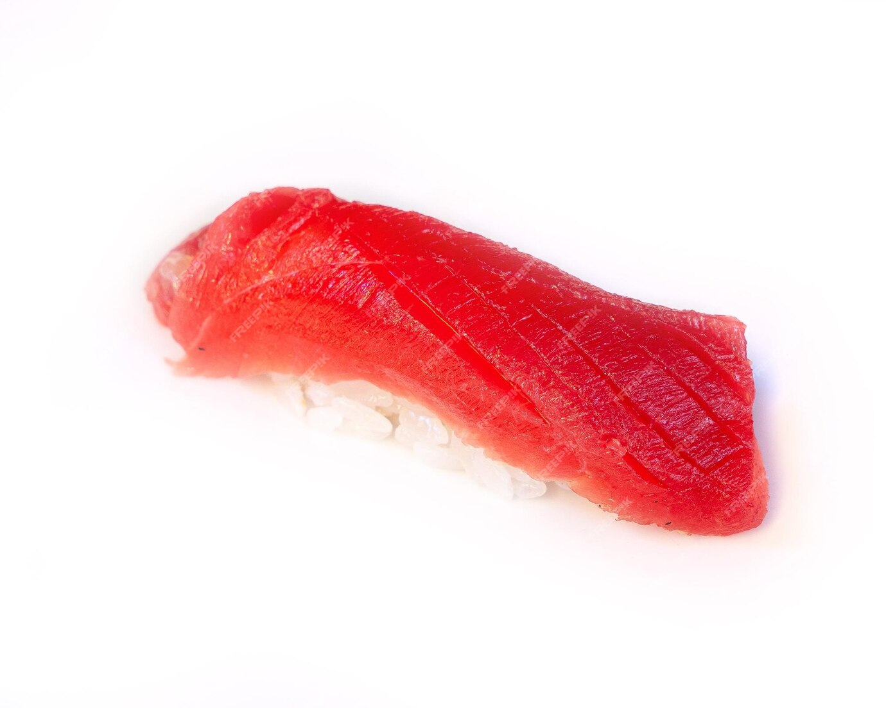

Sushi

This is a recipe on how to make Ahi Nigiri sushi.
Ingredients
- 1/4 teaspoon salt
- 1/8 teaspoon freshly ground black pepper
- 1 8oz. ahi tuna fillet
- 2 cups cooked Sushi Rice
- 1 teaspoon prepared wasabi
- 8 1 x 1/2-inch strips nori
Steps
- Cut tuna into 8 strips and cool.
- Shape 1/4 cup rice into a rectangle about the size of 1 tuna strip. Place 1 tuna strip across middle joints of fingers, palm side up. Spread 1/8 teaspoon wasabi over tuna strip; top with shaped rice. Close hand and gently press rice and tuna together.
- Wrap 1 nori strip around center of nigiri, ending underneath rice. Repeat with remaining ingredients.